调试心得
在PyCharm调试期间，有些心得和注意事项，整理如下。
如果切换调试文件，记得更新Debug配置
背景是，在某个项目中，分别要单独调试某几个Python文件。
当时已经调试完毕其中一个了：
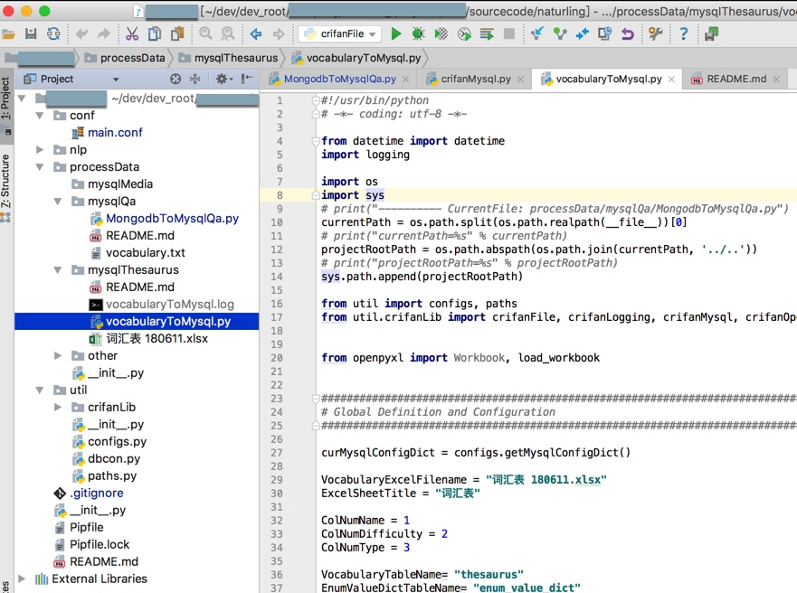
然后切换到另外一个python文件去调试：
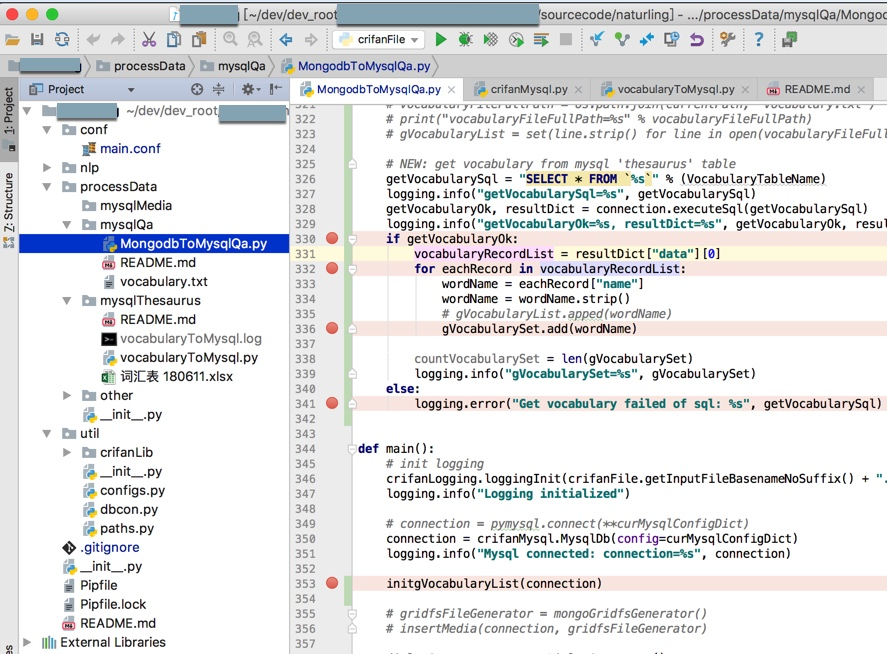
发现遇到很多奇怪的现象：
- log输出也会别的文件的log
- 新文件中的断点也始终无法执行到
- 等等
最后发现原因是：调试的始终是之前的文件，即没有更改调试配置
所以需要去：更新Debug配置
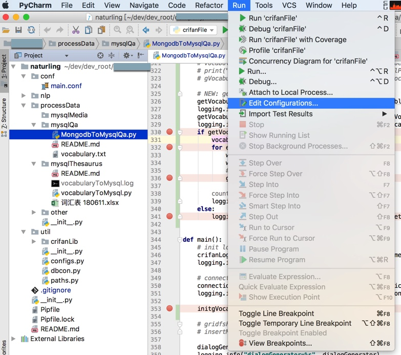
去把之前的要调试的文件：
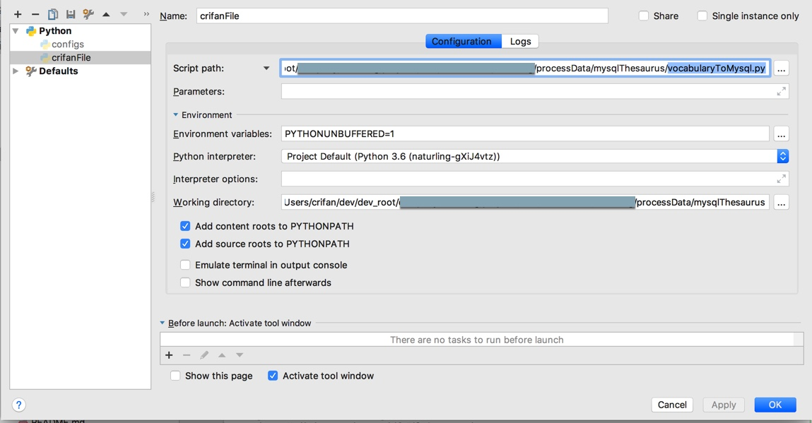
换成当前要调试的新的文件。
可以注意到：不仅要调试的文件名变了，对应当前工作路径，也更新了：
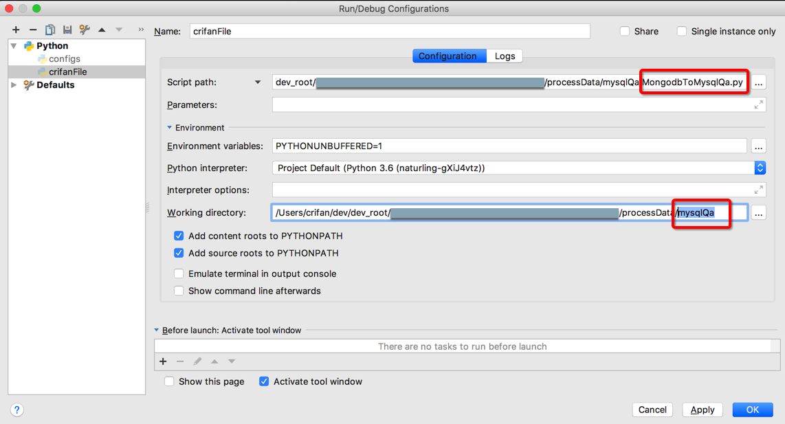
（PyCharm很是智能和方便，考虑的很周到）
然后才能继续调试：
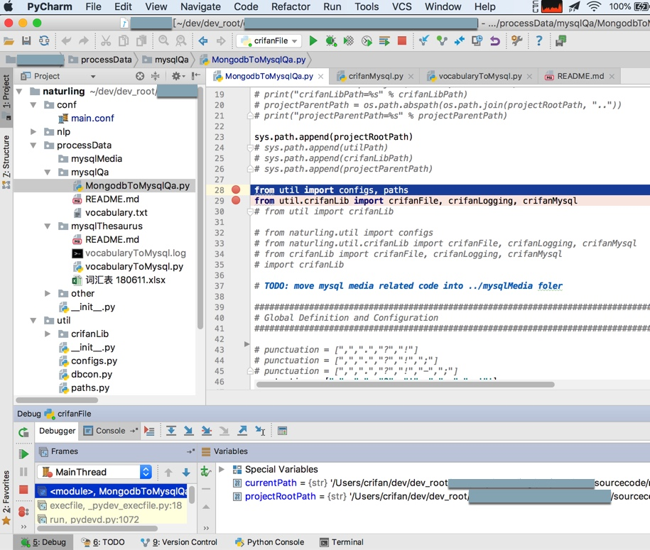
举例：没有更新调试导致文件找不到FileNotFoundError
关于文件找不到：
后记：
此处的vocabulary.txt和py文件MongodbToMysql.py是在同一个文件夹nlp/dialog/data/下面的。
在移动了一次文件后：
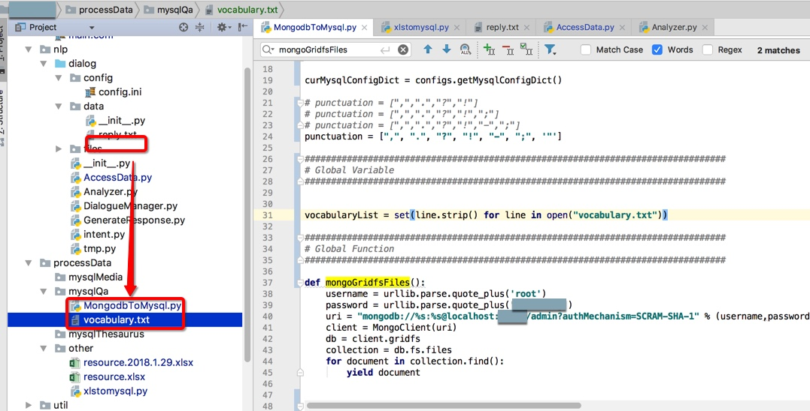
都移动到了另外文件夹processData/mysqlQa/MongodbToMysql.py中了。
而之前的Debug调试设置中，是可以正常的执行代码：
vocabularyList = set(line.strip() for line in open("vocabulary.txt"))
去打开同文件夹下txt文件的。
但是在移动文件夹之后，再去调试，始终出错：
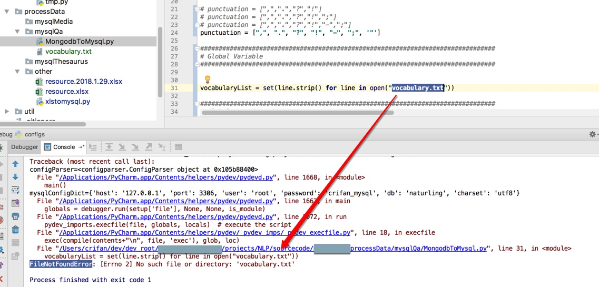
找了找原因，发现是：
在移动文件之后，之前的Debug配置中的当前目录，没有变化，所以去改为py所在的文件夹：
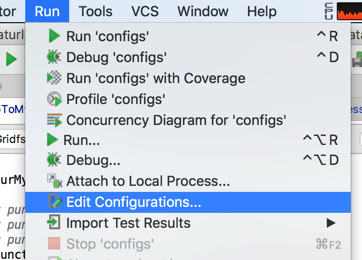
（通过单独选择py文件，自动会设置Working directory，或者手动输入，都可以）
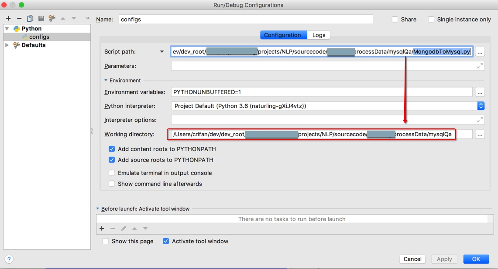
然后就可以解决找不到文件的问题了：
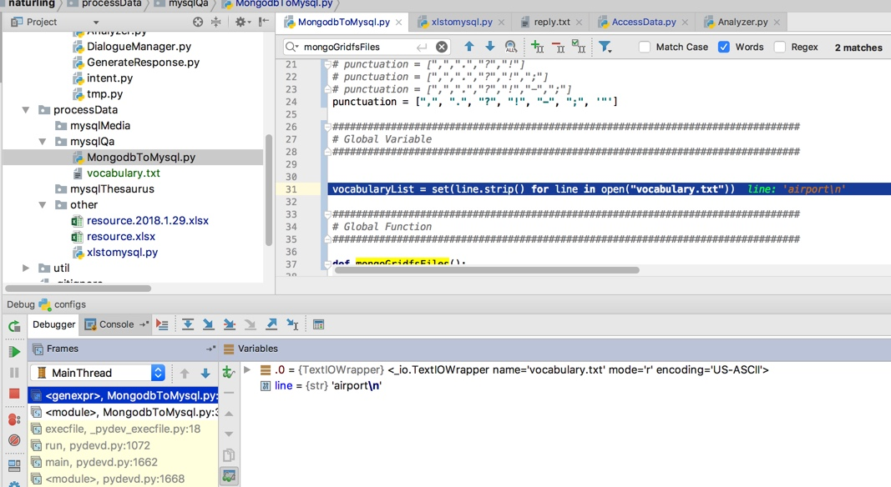